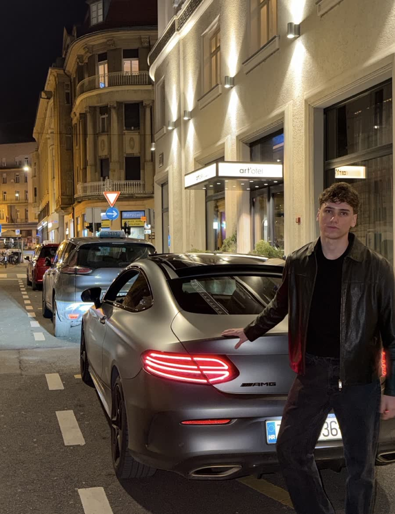
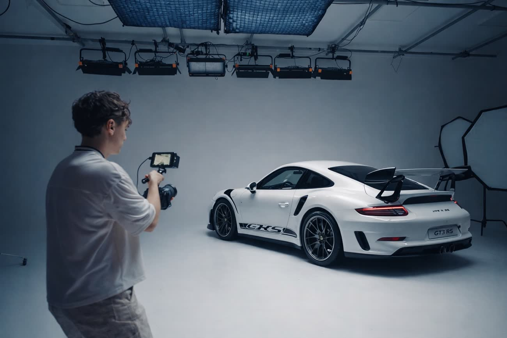
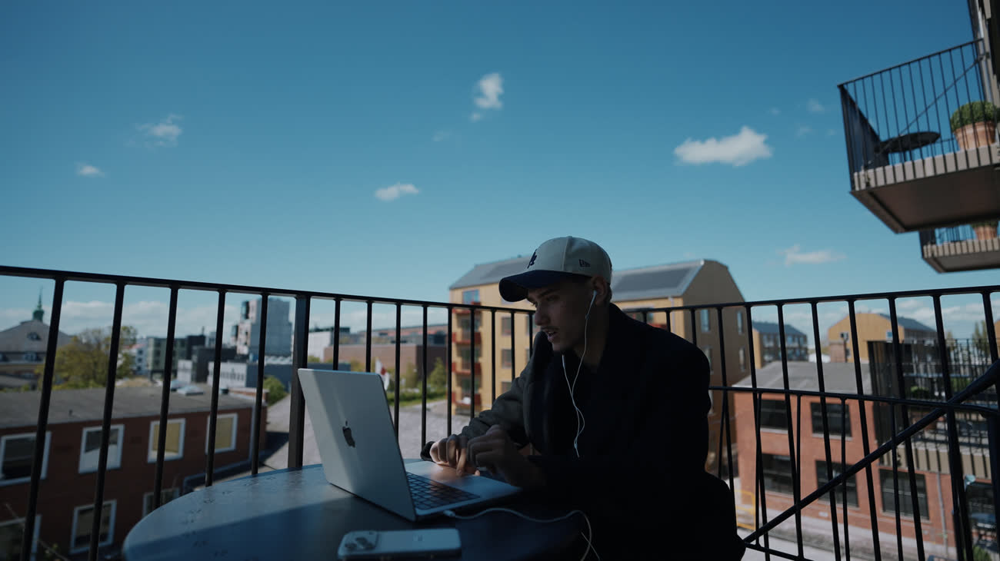

01 · MDG
I work with founders who are building something big.
Creative direction, strategy, film and AI. From the first idea to the final frame, and everything that makes it grow.
- 01
It started with a camera.
Filming in Zagreb, learning what makes people watch.
- 02
Shooting for media.
Campaigns for Armani, L’Oréal Paris and Porsche.
- 03
Working for Iman Gadzhi.
The kickoff for everything else. It took me into the online space and into personal brands.
- 04
Scaling personal brands.
One after another. Founders and creators, grown into brands people follow.
- 05
MDG today.
An agency building content and AI systems for founders and brands.



Creative strategy
Positioning, content plans, campaigns
Content systems
A steady pipeline of posts, reels and ads
Film production
Brand films, VSLs, commercials
AI
AI-powered editing, graphics and workflows
Post-production
Edit, colour, sound, motion
Brand & social
Instagram rebrands, grids, photography
CreatorHub is that work as a platform: the same editing rules, styles and systems, in one place you log in to.